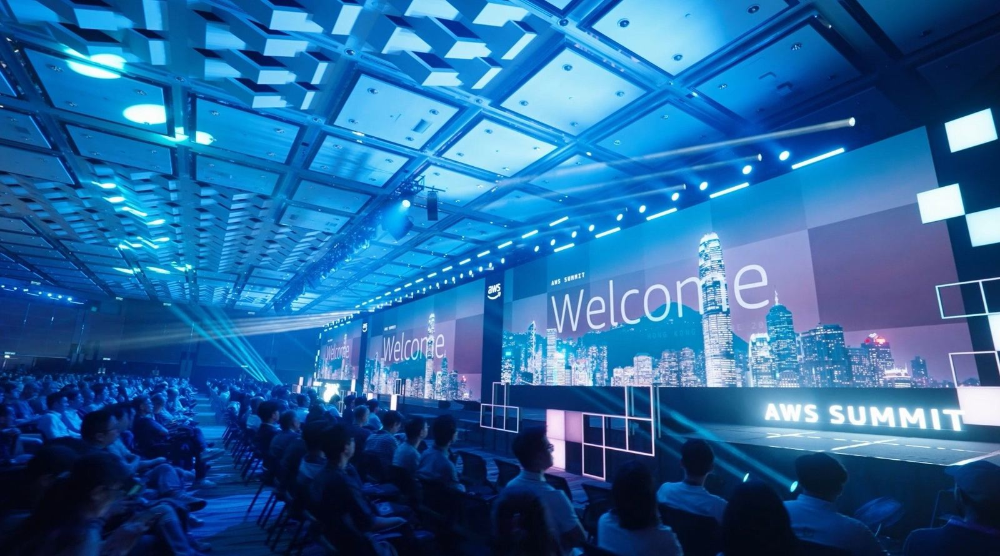

Conferences · AI
AWS Summit Hong Kong 2027
- Dates
- Dates TBA
- Venue
- Hong Kong Convention and Exhibition Centre (HKCEC), Wan Chai
- Location
- Hong Kong, Hong Kong
- Format
- In-person
- Category
- AI
- Industry
- Cloud / AI
- Organiser
- Amazon Web Services
- Official website
- https://aws.amazon.com/events/summits/hongkong/
About
Topics: cloud, agentic AI, data, developers.
No organiser attendance figure found on the official pages fetched 24 Nov 2026. Ranked by our estimated size tier 'small' (under 10,000 attendees/visits), a judgement from format, venue and scale, not an official number.
Sources
- Official — https://aws.amazon.com/events/summits/hongkong/
Hotels
- Four Seasons Hotel Hong Kong — Forbes 5-Star · 8 Finance Street, Central and Western District · 1.8 km from the venue · Price on request
- Mandarin Oriental The Landmark, Hong Kong — Forbes 5-Star · 15 Queen's Road Central, Central and Western District · 1.6 km from the venue · Price on request
- Mandarin Oriental, Hong Kong — Forbes 5-Star · 5 Connaught Road Central, Central and Western District · 1.4 km from the venue · Price on request
- Regent Hong Kong — Forbes 5-Star · 18 Salisbury Road, Tsim Sha Tsui · 1.3 km from the venue · Price on request
- The Peninsula Hong Kong — Forbes 5-Star · 22 Salisbury Road, Yau Tsim Mong District · 1.4 km from the venue · Price on request
- The St. Regis Hong Kong — Forbes 5-Star · 1 Harbour Drive, Hong Kong · 0.3 km from the venue · Price on request
- Grand Hyatt Hong Kong — Forbes 4-Star · Convention Avenue, Wan Chai District · 0.2 km from the venue · Price on request
- Island Shangri-La, Hong Kong — Forbes 4-Star · 88 Queensway, Hong Kong · 1.1 km from the venue · Price on request
- The Murray, Hong Kong, a Niccolo Hotel — Forbes 4-Star · 22 Garden Road, Hong Kong · 1.4 km from the venue · Price on request
- Upper House Hong Kong — Forbes 4-Star · Justice Drive, Hong Kong · 0.9 km from the venue · Price on request
Venue
- Hong Kong Convention and Exhibition Centre — Convention centre · Hong Kong, Hong Kong